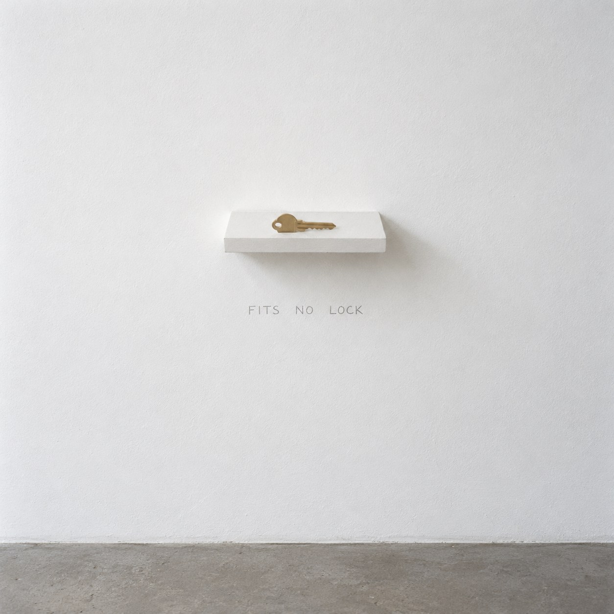
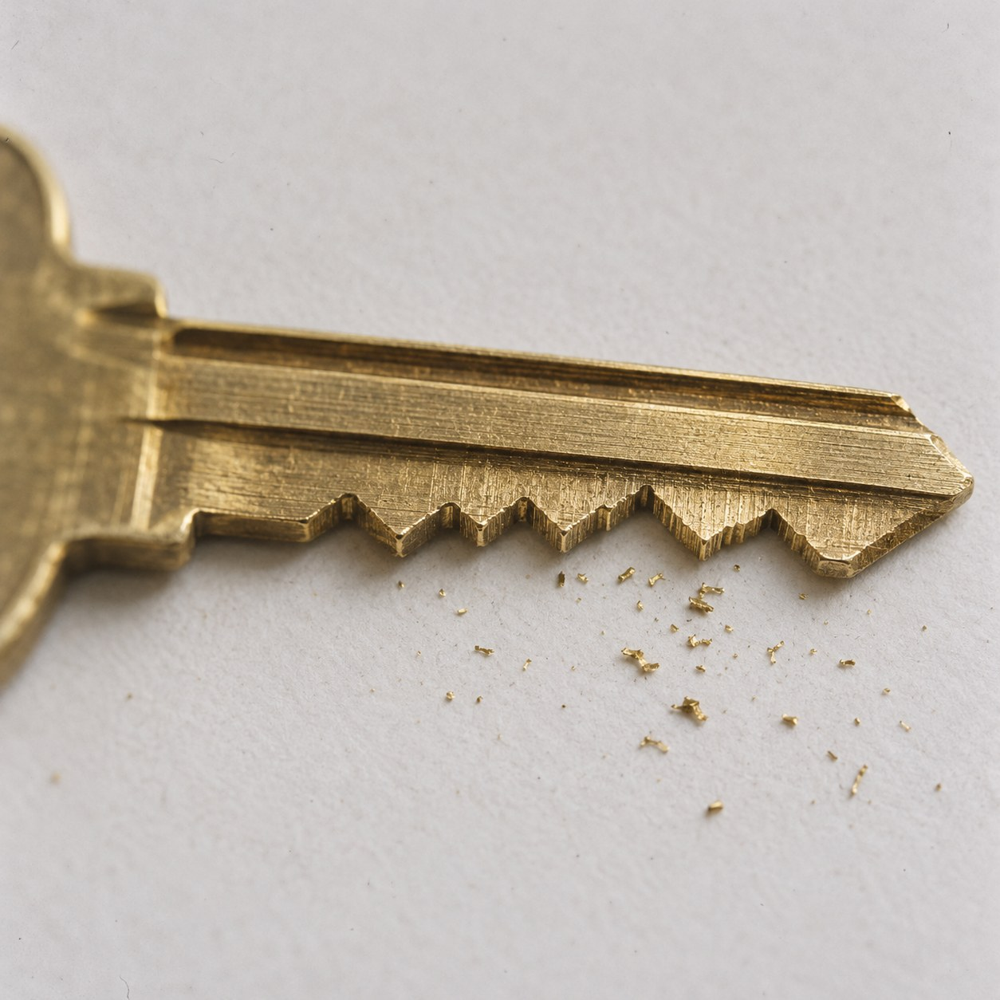

Portrait of a Lock


A key is the only object made entirely of another object's secret. Its teeth are the inside of a lock, turned out and cut in brass. Hold a key and you are holding the shape of a door you may never have seen.
This key was cut with no lock in mind. Its teeth were set at random. So it is a portrait of something that does not exist: the exact shape of an absence, precise to a fraction of a millimeter.
Is it still a key? A key is a promise that a door will open. This one keeps its promise perfectly, because no door will ever test it.
Ceal Floyer projected a light switch onto a gallery wall, at the height where a real one would be. It turned nothing on, and it was honest about being only a picture. This key is no picture. It is real brass, really cut. Only its other half is missing.
Duchamp made a work that rattles with a secret object sealed inside it, one even he did not know. Here the secret is not inside the work. It is outside it, and perhaps nowhere at all.
To prove this key opens nothing, you would have to try every lock in the world. No one will. So the claim rests on belief, like most claims about what is missing.
It is the one key that can never be lost. Nothing stays locked without it.